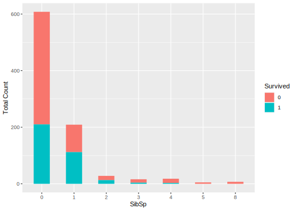
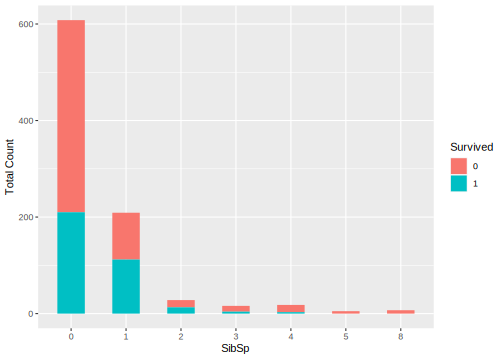
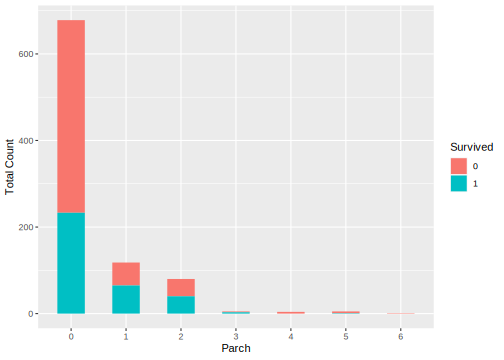
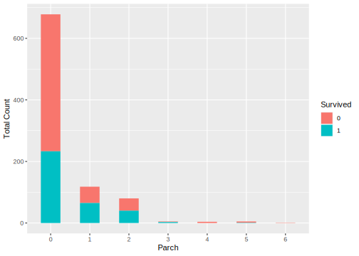
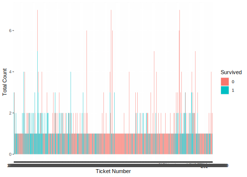
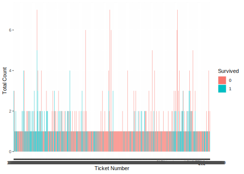
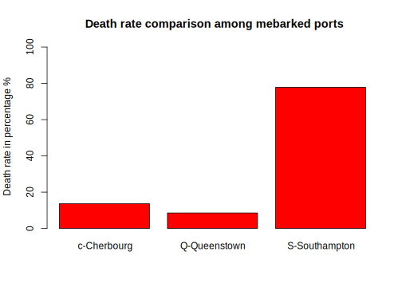
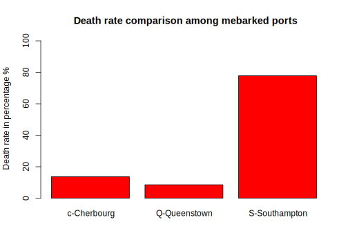

1.5 Actual Data Attributes Value Examination
To understand given datasets needs to carefully examine the values of each data attributes to:
- find any errors and missing values
- find value distribution
- find potential relation with the attribute to be predicted (also called dependent variable)
Finding errors, typos and missing values can set up the goals for data prepsocess.
Since the examine covers both datesets train and test, it make sense to combine the two datasets into one big dataset, so it can save us to run the same code twice on the different datasets.
Copy the following code into your script,
# Add a "Survived" attribute to the test dataset to allow for combining with train dataset
test <- data.frame(test[1], Survived = rep("NA", nrow(test)), test[ ,2:ncol(test)])
# Combine data sets. Append test.survived to train
data <- rbind(train, test)Now we have a dataset data, which combines both datasets train and test datasets. We assigned the value of attribute Survived in the original dataset test as “NA”. You can check them in the WorkSpace pane by click variable data.
Thinking:
- Can we combine
trainandtestwithout add Survived attribute to the test? Like,
data <- rbind(train, test)
- Why add attibute Survived as the second attribute? Can we add it as the first one? Like,
test <- data.frame(Survived = rep("NA", nrow(test)), test[,])
It is good idea to have bird eye’s view on our combined dataset.
## PassengerId Survived Pclass
## Min. : 1 Length:1309 Min. :1.000
## 1st Qu.: 328 Class :character 1st Qu.:2.000
## Median : 655 Mode :character Median :3.000
## Mean : 655 Mean :2.295
## 3rd Qu.: 982 3rd Qu.:3.000
## Max. :1309 Max. :3.000
##
## Name Sex Age
## Connolly, Miss. Kate : 2 female:466 Min. : 0.17
## Kelly, Mr. James : 2 male :843 1st Qu.:21.00
## Abbing, Mr. Anthony : 1 Median :28.00
## Abbott, Mr. Rossmore Edward : 1 Mean :29.88
## Abbott, Mrs. Stanton (Rosa Hunt): 1 3rd Qu.:39.00
## Abelson, Mr. Samuel : 1 Max. :80.00
## (Other) :1301 NA's :263
## SibSp Parch Ticket Fare
## Min. :0.0000 Min. :0.000 CA. 2343: 11 Min. : 0.000
## 1st Qu.:0.0000 1st Qu.:0.000 1601 : 8 1st Qu.: 7.896
## Median :0.0000 Median :0.000 CA 2144 : 8 Median : 14.454
## Mean :0.4989 Mean :0.385 3101295 : 7 Mean : 33.295
## 3rd Qu.:1.0000 3rd Qu.:0.000 347077 : 7 3rd Qu.: 31.275
## Max. :8.0000 Max. :9.000 347082 : 7 Max. :512.329
## (Other) :1261 NA's :1
## Cabin Embarked
## :1014 : 2
## C23 C25 C27 : 6 C:270
## B57 B59 B63 B66: 5 Q:123
## G6 : 5 S:914
## B96 B98 : 4
## C22 C26 : 4
## (Other) : 271This summary tell us a lot of information. Most obvious are:
- PassengerID is useless in terms of predicting survived or not. in addition, it is not much help that provide a statistical summary on it.
- Survived and Pclass numbers are useful and interesting.
- Name is mostly unique, which comes a surprise that only 2 names are repeated twice.
- Gender distribution among passenger is unbalanced that male overweight female.
- Age is interesting that minimum age 0.17 is alarming and there is 263 missing values.
- SibSp tells us the largest relatives travel together is 8.
- ParCh tells us the largest family travel together is 9.
- There are a number of ticket has the same number. The most repeat number is CA. 2343, which has 11 duplicates.
- Ticket Fare shows the minimum is 0, which is interesting that someone take a free ride. The maximum is over 512, which is far too expensive when the mean value is only about 33.
- Cabin has a large number of missing values (identified by "").
- Embarked only has three values which is not a good sign for prediction. it also has 2 missing value.
You can see now one function can provide so much information. Quantitative summary is a great tool for a data scientist.
Now, Let us exam each attribute,
1.5.1 PassengerID.
PassengerId is an identifier, So only its uniqueness and missing value are considered.
There are many ways you can use to find out. I simply check its total number and its unique number. If the both equal to the number of records in the dataset, it shows that there is no duplication and no missing values in the attribute.
So we do,
## [1] 1309## [1] 1309The results shows the both number 1309, which is equal to the total number of records in the dataset. It proves the PassengerID has no missing value and duplication.
1.5.2 Survived
Survived is the attribute that its value will be produced by a model for the dataset test. It is called Consequencer or dependent variable or response variable in modeling contrast with other attributes, which are used to produce a prediction, are called Predictor, independent variable. So, our exam will be conducted only on dataset train. Again we can check the numbers whether they can add up or not. As we already mentioned that it makes sense to change the Servived from type chr into Factor. We do,
# Exam Survived
data$Survived <- as.factor(data$Survived)
table(data$Survived, dnn = "Number of Survived in the Data")## Number of Survived in the Data
## 0 1 NA
## 549 342 418The results proved that the Survived value has the correct numbers:
- 418 ‘NA’ values are the Survived’s value in the test dataset, and
- the 549 death and 342 survived, together made up the total number of train dataset, which is 891.
So we know the value of Survived in the train dataset are correct and has no missing values. It is interesting here to think about the survive rate.
How to calculate?
# Calculate the survive rate in train data is 38% and the death rate is 62%
prop.table(table(as.factor(train$Survived), dnn = "Survive and death ratio in the Train"))## Survive and death ratio in the Train
## 0 1
## 0.6161616 0.3838384So we know the survive rate in the train dataset is about 61%. This is interesting because it reflects the overall survival rate.
1.5.3 Pclass
Pclass is the feature which splits the passengers into three division namely class-1, class-2, class-3. As we understood it should be in type of Factor rather than int. We shall change its type first and then to see if there missing value or errors. It is also good to know the survival rate in each class. So. we can compare with the overall survival rate in the dataset train.
Copy the following code into your script.
# Examine Pclass value,
# Look into Kaggle's explanation about Pclass: it is a proxy for social class i.e. rich or poor
# It should be factor and it does not make sense to stay in int.
data$Pclass <- as.factor(data$Pclass)
# Distribution across classes
table(data$Pclass, dnn = "Pclass values in the Data")## Pclass values in the Data
## 1 2 3
## 323 277 709If you want, you can check the total of the three classes which is 1309. It equals to the total number of records in the Data (total number fo passenger). And there is no other numbers than 1,2 and 3. So we can conclude that there is no missing value and no errors in Pcalss.
It will be interesting to see the survival rate for each class,
##
## 0 1 NA
## 1 80 136 107
## 2 97 87 93
## 3 372 119 218These numbers tell us many things:
The death distribution. Among the three classes from class-1 to class-3 is: 80, 97 and 379. It confirms that the passenger in Class-3 has largest number of death (372);
The survival distribution. Among the three classes, class-1 has the highest number of survival (136);
The passengers distribution. Among the three classes, class-3 has the largest passenger numbers (372+119+218) in total, and overtaking other two classes together for both datasets
trainandtest(372+119) > ((80+97) + (136+87)).The last column is the passenger distribution among the three glasses for the test dataset. This is because its Survived value is “NA” (not defined).
We can calculate distributions among the three classes in terms of percentage.
- The overall passenger’s distribution among the three classes:
# Calculate the distribution on Pclass
# Overall passenger distribution on classes.
prop.table(table(as.factor(data$Pclass), dnn = "Pclass percentage in the Data"))## Pclass percentage in the Data
## 1 2 3
## 0.2467532 0.2116119 0.5416348That is 24.67% passenger in Class-1, 21.16% passenger is class-2 and 54.16% of passenger in class-3.
- The passenger’s distribution among the three classes given by dataset
train:
# Train data passenger distribution on classes.
prop.table(table(as.factor(train$Pclass),dnn = "Pclass percentage in the Train"))## Pclass percentage in the Train
## 1 2 3
## 0.2424242 0.2065095 0.5510662The number tells us the distribution of passengers from dataset train is: class-1, 24.24%; class-2, 20.65% and class-3 has 55.1%.
- The passenger’s distribution among the three classes in the test dataset:
# Test data passenger distribution on classes.
prop.table(table(as.factor(test$Pclass), dnn = "Pclass percentage in the Test"))## Pclass percentage in the Test
## 1 2 3
## 0.2559809 0.2224880 0.5215311Lastly, the passenger distribution from test dataset are: 25.6% in class-1, 22.24% in class-2 and 52.15% percent in class-3.
We can see that the distribution of passengers, in terms of percentage, among the three classes are almost identical both in order and in proportion. That is the most passenger are in class-3, then class-1 and finally class-2.
Let us look into death and survive distribution among the three classes3,
# Calculate death distribution across classes with Train data
SurviveOverClass <- table(train$Pclass, train$Survived)
# Convert SurviveOverClass into data frame
SoC.data.fram <- data.frame(SurviveOverClass)
# Retrieve death distribution in classes
Death.distribution.on.class <- SoC.data.fram$Freq[SoC.data.fram$Var2==0]
prop.table(Death.distribution.on.class)## [1] 0.1457195 0.1766849 0.6775956These numbers tell us the distribution of death among the three classes are: 14.57% death from class-1, 17.66% from class-2 and 67.75% death from class-3.
Similarly, we can calculate survive distribution among the three classes,
# calculate survive distribution among the three classes
Survive.distribution.on.class <- SoC.data.fram$Freq[SoC.data.fram$Var2==1]
prop.table(Survive.distribution.on.class)## [1] 0.3976608 0.2543860 0.3479532The results tell us that 39.76% of survived passenger are from class-1, and 25.43% from class-2, and 34.79% from class-3.
Let us thinking about this numbers. Class-3 has 55.1% of passenger distribution but has 34.79% passenger survival distribution. Clearly, the survive rate in class-3 is lower than other two classes. It is equivalent to say, the survival chances of a passenger who is in class-1 are higher than who is a class-2 and class-3.
Do it yourself:
Calculate the Survival rate among the three classes. What conclusion you have by compare them?Numbers are good to provide summary and test some assumptions. Analyzing given data by means of statistical summary and other numbering methods is called Descriptive analysis. See section ?? .
Perhaps, it is a good time to introduce Exploratory analysis, on the contrast with the Descriptive analysis, it uses graphical tools to explore the inside of given datasets.
To do so, we need to import some useful graphical tools provided by R community. We can then use them to plot Survived as an factor on Pclass numbers.
## Warning: package 'ggplot2' was built under R version 3.6.3ggplot(train, aes(x = Pclass, fill = factor(Survived))) +
geom_bar(width = 0.3) +
xlab("Pclass") +
ylab("Total Count") +
labs(fill = "Survived")Figure 1.6: Total count and survive rate of passenger on Pcalss.
Graph is better, isn’t it? It is very intuative.
Let’s briefly interpret this graph. The graph shown 1.6 tells us that the survive rate in Class-3 is the worst, and followed by class-2 and lastly, class-1. More people perished in the class-3 than any other two classes. It provides an important point that the chance of survive is associated with the social glass, if we can prove the Class-3 ticket is cheaper.
To sum up the analysis with Pclass, We have used both Descriptive analysis and Exploratory analysis. The results suggested that the Pclass has a strong relation with death rate. That is passengers in Class-3 have a higher chance of death. The correlation with social class (richer or poor) is waiting to be proved if the class-3 ticket is cheaper than others.
1.5.4 Name
Name attribute by definition shows peoples’ name. It should not have any impact on passengers’ live and death. Never heard of someone was survived because one’s name! However we still need to asess its quality. Fir
Firstly, you may notice that the type of Name is a Factor, which is contradicted with the conventional understanding that name is a string or a list characters. Type chr would be more appropriate. Change its type to chr will help us to apply character functions to it and get it contents easily. Factor shows the uniqueness. it could help us to assess if there is missing value or duplicated values.
Notice that attribute Name only has 1307 levels (can be observed from the data structure on the WorkSpace pane). In addition, the data summary, see Figure ??, not only confirmed this but also identified the two shorts because of the value “Connolly, Miss. Kate” and “Kelly, Mr. James” have been repeated twice each.
Let us explore Name values in details.
Firstly, let us convert Name type into chr. Then we can check duplicated names using which function in R to get the duplicate names and store them into a vector dup.names. And echo them out.
# Convert Name type
data$Name <- as.character(data$Name)
# Find the two duplicate names
# First used which function to get the duplicate names and store them as a vector dup.names
# check it up ?which.
dup.names <- data[which(duplicated(data$Name)), "Name"]
# Echo out
dup.names## [1] "Kelly, Mr. James" "Connolly, Miss. Kate"Our code confirmed that the two duplicated names are indeed "“Kelly, Mr. James” and “Connolly, Miss. Kate”. It comes no surprise that the both names are pretty common in UK and USA.
One discovery though is that the names appeared has a title in it! Mr. is used in Kelly James and Miss. is used in Connolly Kate. This could be interesting. We can leave this for Preprocess to explore more. For the quality assessment it is mission accomplished.
1.5.5 Sex
Sex attribute value assessment is simple. Its type Factor helps a lot. Since it only has two values “male” and “female”, we could easily check if there are missing values and any errors.
## female male
## 466 843It is obvious that there is no error and missing values. The result confirms this: male 843 and female 466, together we have 1309 passengers, which is the total numbers of the passenger.
It is also simple to explore the relationship between gender and the survival rate. We had an assumption that the male passengers have a high death rate. We have plot tools in our disposal, let’s make use of it. Since only dataset train has the values on Survived, it makes sense that we only plot relation between gender and survival on dataset train.
# plot Survived over Sex on dataset train
ggplot(data[1:891,], aes(x = Sex, fill = Survived)) +
geom_bar(width = 0.3) +
xlab("Sex") +
ylab("Total Count") +
labs(fill = "Survived")
Figure 1.7: Total count and survive rate of passenger on sex.
The graph shows that the male death rate is much higher than female passengers.
Thinking:
We have useddata[1:891,] in our ggplot code. Why we do not use dataset train instead? What are the differnce if there is any?
1.5.6 Age
To examine values of attribute Age, we do this,
## Min. 1st Qu. Median Mean 3rd Qu. Max. NA's
## 0.17 21.00 28.00 29.88 39.00 80.00 263## Min. 1st Qu. Median Mean 3rd Qu. Max. NA's
## 0.42 20.12 28.00 29.70 38.00 80.00 177## Min. 1st Qu. Median Mean 3rd Qu. Max. NA's
## 0.17 21.00 27.00 30.27 39.00 76.00 86These summary tell us that the minimum, median, mean, maximum and missing values (as NA). They are useful. but they failed telling us on the value distribution.

Figure 1.8: Age summary as categorical data.
From Figure 1.8, we can see a few problems:
Age values have decimal point which is a sort of surprise and not sure if it is a mistake.
There are large number of missing values: 177 missing value in dataset
trainand 86 missing value in datasettest, in total of 263, which count as 263/1309 = 20%. large number of missing values sets up a task for data preprocess to deal with. In the same time, it make you think whether it is a valid predictor or not.
We can assess its impact on survive rate. So we need to look into dataset train.
# plot distribution of age group
ggplot(data, aes(x = Age)) +
geom_histogram(binwidth = 10, fill="steelblue") +
xlab("Age") +
ylab("Total Count")## Warning: Removed 263 rows containing non-finite values (stat_bin).# plot Survived on age group using train dataset
ggplot(data[1:891,], aes(x = Age, fill = Survived)) +
geom_histogram(binwidth = 10) +
xlab("Age") +
ylab("Total Count")## Warning: Removed 177 rows containing non-finite values (stat_bin).
Figure 1.9: Age ditribution and its Survive rate of passenger
The graph shows the relationship between Age and survival rate. It becomes apparent that age group between 15 and 25 has the worst survival rate.
With this, we could conclude that.
The attribute Age has a serious quality problem: some age values are negative and large number 177 values are missing. If it is to be used as a predictor in our model for prediction, it needs a lot of work in the stage of preprocess.
1.5.7 SibSp
Attribute SibSp represents passenger’s siblings and sprouts who travels with the passenger. We will a have pretty good idea about its values. This will help us to spot any errors and missing values.
We do this,
## Min. 1st Qu. Median Mean 3rd Qu. Max.
## 0.0000 0.0000 0.0000 0.4989 1.0000 8.0000## [1] 7## [1] 1309# Treat it as a factor, so we know the value distribution
data$SibSp <- as.factor(data$SibSp)
summary(data$SibSp)## 0 1 2 3 4 5 8
## 891 319 42 20 22 6 9The results have provided us with good evidence for access its values. Firstly, we know the minimum value is 0, and there are 891 records have 0 values. It means that there are 891 passenger who travel without siblings and sprouts; secondly, apart from the value 0, the 3 quarters of the passenger who has 1 company; and lastly the maximum number of the company a passenger had is 8. There are 9 of them. There are totally 7 kinds of company in terms of the numbers of company a passenger can have.
It has not error or missing value since the total number are correct.
We can assess its prediction power by looking into the relationship between SibSp and Suvivied,
# plot entire SibSp distribution among the 7 values
ggplot(data, aes(x = SibSp)) +
geom_bar(width = 0.5) +
xlab("SibSp") +
ylab("Total Count")+
coord_cartesian()
# Plot on the survive on SibSp
ggplot(data[1:891,], aes(x = SibSp, fill = Survived)) +
geom_bar(width = 0.5) +
xlab("SibSp") +
ylab("Total Count") +
labs(fill = "Survived") 

Figure 1.10: Plot SibSp distribution among the 7 values and its survive rate.
We run two plots: the first one is the value distribution on entire dataset to have an impression on its distribution shape; and the second one is checking the survival rate over its distribution groups by dataset train. It seems that passenger who have two companies tend to have a better survival rate. This could be an interesting pattern to explore.
Do it yourself:
Calculate the Survival rate among the 7 possibilities in terms of have siblings or sprouds treval with them. What conclusion you have by compare them?We can conclude that the value of SibSp have a pretty good quality and there is no apparent error and missing values. Its predication power needs further investigation but it is informative.
1.5.8 Parch
Attribute Parch, similar with SibSp, is representing the travel company or groups. Parch specifically represents parents or children. I don’t know why Kaggle separate them but it seems reasonable to think they together represent one thing that is “travel with family”.
To access its value, we will do the same as we did on SibSp.
## Min. 1st Qu. Median Mean 3rd Qu. Max.
## 0.000 0.000 0.000 0.385 0.000 9.000## [1] 8## [1] 1309# Treat it as a factor, so we know the value distribution
data$Parch <- as.factor(data$Parch)
summary(data$Parch)## 0 1 2 3 4 5 6 9
## 1002 170 113 8 6 6 2 2The discovery is similar again with SibSp, that is: 1. The minimum value is 0, and there are 1002 records have 0 values. It means that there are 1002 passenger who travel without without parents or children (we still cannot see the passenger travel alone, he or she could travel with a sibling or a sprout, However, this rise an idea to look into passenger who travel alone, which means no sibling, sprout, parents and children.); 2. The maximum number is 9. There are 2 of them. 3. Apart from the value 0, the largest company number is 1. There are 170. 4. There are totally 8 possibilities in terms of the numbers of company a passenger can have. 5. It has not error or missing value since the total number are correct.
We can assess its prediction power too by looking into the relationship between Parch and Survived,
# plot entire Parch distribution among the 7 values
ggplot(data, aes(x = Parch)) +
geom_bar(width = 0.5) +
xlab("Parch") +
ylab("Total Count")+
coord_cartesian()
# Plot on the survive on Parch
ggplot(data[1:891,], aes(x = Parch, fill = Survived)) +
geom_bar(width = 0.5) +
xlab("Parch") +
ylab("Total Count") +
labs(fill = "Survived") 

Figure 1.11: Plot Parch distribution among the 8 values and its survive rate.
The plot shows us that it is definitely have impact on survival. But it i snot clear the prediction power in comparison with SibSp. I am not sure there are difference between “travel with parents or children” and “travel with siblings and sprout”. In addition, value 0 in each attributes does not excludes other attributes. Travel without parents or children does not mean travel without siblings or sprout. If we try to see the impact on survived in terms travel alone or with a company, we need to re-engineer these attributes. It is a good point anyway and give another task for data preprocess to do.
1.5.9 Ticket
Intuitively, as mentioned before, ticket number like passenger names, should not be considered as bounded with the survival of a passenger. Unless the ticket number has other hidden information such as class or location on the boat. Bearing this in mind, let us assess its value.
## CA. 2343 1601 CA 2144 3101295 347077
## 11 8 8 7 7
## 347082 PC 17608 S.O.C. 14879 113781 19950
## 7 7 7 6 6
## 347088 382652 113503 16966 220845
## 6 6 5 5 5
## 349909 4133 PC 17757 W./C. 6608 113760
## 5 5 5 5 4
## 12749 17421 230136 24160 2666
## 4 4 4 4 4
## 36928 C.A. 2315 C.A. 33112 C.A. 34651 LINE
## 4 4 4 4 4
## PC 17483 PC 17755 PC 17760 SC/Paris 2123 W./C. 6607
## 4 4 4 4 4
## 110152 110413 11767 13502 19877
## 3 3 3 3 3
## 19928 230080 239853 248727 248738
## 3 3 3 3 3
## 26360 2650 2653 2661 2662
## 3 3 3 3 3## Factor w/ 929 levels "110152","110413",..: 524 597 670 50 473 276 86 396 345 133 ...## integer(0)The value of Ticket appears has no missing value and there are 929 different numbers. It indicates that there are passengers share the same ticket number. Ticket appeared in two major formats: some with letters and special characters like “.” and “/”. others just numbers. There is no immediately apparent structure in the data. Let us plot them and also see if there is any pattern with survival.
#plot it value
ggplot(data[1:891,], aes(x = Ticket)) +
geom_bar() +
xlab("Ticket") +
ylab("Total Count")
# Plot on the survive on Ticket
ggplot(data[1:891,], aes(x = Ticket, fill = Survived)) +
geom_bar() +
xlab("Ticket Number") +
ylab("Total Count") +
labs(fill = "Survived") 

Figure 1.12: Plot of Ticket distribution and survival rate.
The same tickets number has such a small number of passenger sharing. It does not have any statistical meaning. It is possible to re-engineer ticket number into groups like “number only” vs “with letter” or “with special characters”, or simply group them with the length of the ticket or with the initials, etc. There is a lot of thing you can do to see if there is any patterns connected with the survival.
Over all, Ticket has a good quality and has no missing value and errors (we dont count repeated ticket number is an error). However, there is no obvious relations with the survive rate.
1.5.10 Fare
The value of Fare are expected associated with “passenger’s wealth”. You would naturally associate its value with cabin condition and perhaps location of he cabin. Let us assess its value quality.
## Min. 1st Qu. Median Mean 3rd Qu. Max. NA's
## 0.000 7.896 14.454 33.295 31.275 512.329 1## [1] 282The initial assessment tells us that:
1. The value of Fare has one missing value.
2. They are 282 different prices among 1308 tickets.
3. The minimum value is 0 (Free ride?) and the maximum value is 512.329.
4. The mean value is 33.295 and the median is only 14.454.
5. There are two potential issues in here: 512.329 is extremely higher than others, it could be considered as an outlier or an error; another potential issue is the precision. Any currency cannot have a physical money which carry value three digits after the decimal point. so any value has three digits after decimal point could be an error.
Let us examine the prediction power of attribute Fare.
ggplot(data, aes(x = Fare)) +
geom_histogram(binwidth = 5) +
ggtitle("Fare Distribution") +
xlab("Fare") +
ylab("Total Count") +
ylim(0,200)## Warning: Removed 1 rows containing non-finite values (stat_bin).## Warning: Removed 1 rows containing missing values (geom_bar).# Let's check to see if fare has predictive power
ggplot(data[1:891,], aes(x = Fare, fill = Survived)) +
geom_histogram(binwidth = 5) +
xlab("Fare") +
ylab("Total Count") +
ylim(0,50) +
labs(fill = "Survived")## Warning: Removed 6 rows containing missing values (geom_bar).

Figure 1.13: Plot of Fare distribution and survival rate.
It is not clear about Fare prediction power. One thing is clear that to be useful for predcition, Fare needs more engineer such as group it in different groups like <5, 5 to 10, 10 to 15, …, etc.
1.5.11 Cabin
Cabin has a large number of missing values as we noticed from the beginning of this section 1.5. So its quality is expected to be bed. let us find out how many missing values is the dataset train, so we can assess its predictive power over survive.
Firstly, by looking into the structure of the dataset,
## Factor w/ 187 levels "","A10","A14",..: 1 83 1 57 1 1 131 1 1 1 ...# Cabin really isn't a factor, make a string and the display first 100
data$Cabin <- as.character(data$Cabin)
data$Cabin[1:100]## [1] "" "C85" "" "C123" ""
## [6] "" "E46" "" "" ""
## [11] "G6" "C103" "" "" ""
## [16] "" "" "" "" ""
## [21] "" "D56" "" "A6" ""
## [26] "" "" "C23 C25 C27" "" ""
## [31] "" "B78" "" "" ""
## [36] "" "" "" "" ""
## [41] "" "" "" "" ""
## [46] "" "" "" "" ""
## [51] "" "" "D33" "" "B30"
## [56] "C52" "" "" "" ""
## [61] "" "B28" "C83" "" ""
## [66] "" "F33" "" "" ""
## [71] "" "" "" "" ""
## [76] "F G73" "" "" "" ""
## [81] "" "" "" "" ""
## [86] "" "" "" "C23 C25 C27" ""
## [91] "" "" "E31" "" ""
## [96] "" "A5" "D10 D12" "" ""We find out that Cabin is in a type of Factor and has 187 unique values with empty string "" and string start with letter like “A10”.
By looking actual 100 values, we have a pretty good understand its contents. Notice that some string looks like multiple numbers, for instance “C23 C25 C27”, it is odd in comparison with others.
let us have a close look at the dataset train and assess its prediction power.
# Find out number of the missing value in the train
train$Cabin <- as.character(train$Cabin)
# number of the missing value in the train
table(train[which(train$Cabin ==""), "Cabin"])##
##
## 687# percentage of the missing value in the train
table(train[which(train$Cabin ==""), "Cabin"])/length(train$Cabin)*100##
##
## 77.10438The above code tells us that in the dataset train, there are 687 missing value and it count as 71 percent of total value. This is significant number. Generally it will write off the attribute for any meaning for use. However, like its relation with survive with the consideration of the missing value.
Since the small number of passenger in each cabin, we accumulate passenger with the first latter of the cabin number. That means we bin the passengers based on the first letter of their cabin number. Then we plot the survived number over the total number.
# Take a look at just the first char as a factor and add to data as a new attribute
data$cabin.first.char<- as.factor(substr(data$Cabin, 1, 1))
# first cabin letter survival plot
ggplot(data[1:891,], aes(x = cabin.first.char, fill = Survived)) +
geom_bar() +
xlab("First Cabin Letter") +
ylab("Total Count") +
ylim(0,750) +
labs(fill = "Survived")
Figure 1.14: Plot of the passenger number and the survived number based on the first letter of their cabin number.
To sum up, Cabin attribute has large number of missing value. The dataset train has 687 missing value and it counts as 71 percent of total value. Its prediction power is in serious doubt since it only has very small number for each cabin. To use it in any possible prediction model, it needs some re-engineering.
1.5.12 Embarkded
Attribute Embarked records where a passenger get on board. From the Kaggle data description we know that there are three possible values for Embark — Southampton (S), Cherbourg (C), and Queenstown (Q). Let’s check the data quality.
## C Q S
## 2 270 123 914## [1] 1309The results confirms that there two missing values and three ports. Southampton as its initial depart port has largest passengers get on board. Let’s see its distribution and the survival rate.
# Plot data distribution and the survival rate for analysis
ggplot(data, aes(x = Embarked)) +
geom_bar(width=0.5) +
xlab("Passenger embarked port") +
ylab("Total Count")
ggplot(data[1:891,], aes(x = Embarked, fill = Survived)) +
geom_bar(width=0.5) +
xlab("Embarked port") +
ylab("Total Count") +
labs(fill = "Survived")

Figure 1.15: Plot of Embarked distribution and survival rate.
The graph shows that about 70% of the people boarded from Southampton (914/1309 = 0.698). Just over 20% boarded from Cherbourg (270/1309 = 0.206) and the rest boarded from Queenstown about 10%.
# Calculate death distribution over Embarked port with Train data
# create Embarked and Survived contingency table
SurviveOverEmbarkedTable <- table(train$Embarked, train$Survived)
# Death-0/survived-1 value distribution (percentage) based on embarked ports
# prop.table(mytable, 2) give us column (Survived) percentages
Deathandsurvivepercentage <- prop.table(SurviveOverEmbarkedTable, 2)
# Plot
M <- c("c-Cherbourg", "Q-Queenstown", "S-Southampton")
barplot(Deathandsurvivepercentage[2:4,1]*100, xlab =(""), ylim=c(0,100), ylab="Death distribution in percentage %", names.arg = M, col="steelblue", main="Death distribution", border="black", beside=TRUE)
barplot(Deathandsurvivepercentage[2:4,2]*100, xlab =(""), ylim=c(0,100), ylab="Servive distribution in percentage %", names.arg = M, col="blue", main="Servive distribution", border="black", beside=TRUE)
## Calculate survived RATE distribution based on embarked ports
# Death-0/survived-1 value distribution (percentage) based on embarked ports
# prop.table(mytable, 1) give us row (Port) percentages
# col-1 (Survived=0, perished) and col-2 (Survived =1, survived)
DeathandsurviveRateforeachport <- prop.table(SurviveOverEmbarkedTable, 1)
#plot
barplot(Deathandsurvivepercentage[2:4,1]*100, xlab =(""), ylim=c(0,100), ylab="Death rate in percentage %", names.arg = M, col="red", main="Death rate comparison among mebarked ports", border="black", beside=TRUE)
 

Figure 1.16: Plots of death distribution, survive distribution and death rate comparision over embarked port.
The plot shows that both death and survive number distribution are similar. Southampton takes most death and survive portion because it has the largest number of passenger get on board, then Cherbourg, and last is Queenstown. However, in terms of death rate, which is the death/total from the passenger who get on board, southampton is the is the highest and then Queenstown, teh last is Cherbourg. That is to say, people who boarded from Cherbourg had a higher chance of survival than people who boarded from Southampton or Queenstown.
In summary, we have explored all attributes through descriptive analysis, which is mainly using numbers and through exploratory analysis, which is using plot. We have examined the quality of each attributes by finding missing values and duplication. We have spoted some outliars and odd values.
We have also assessed relationship between attribute Survived and all other attributes. The prediction power of each attributes have been understand to some extend. More prediction power study such as combination of two or three attributes are needed.
The findings of each attributes provide tasks and goals for data preprocess step to accomplish.
This code is not brilliant. It used many intermediate variables, you can check their structure and contents from WorkSpace pane. You can come up with a better code.↩︎